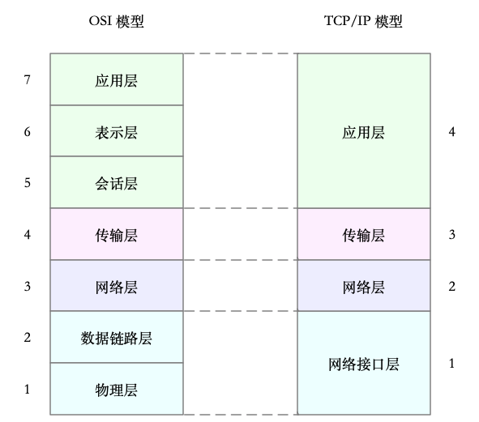
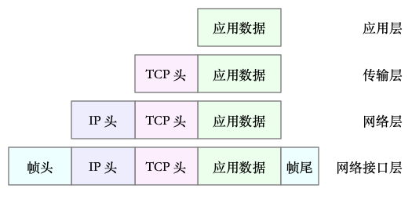
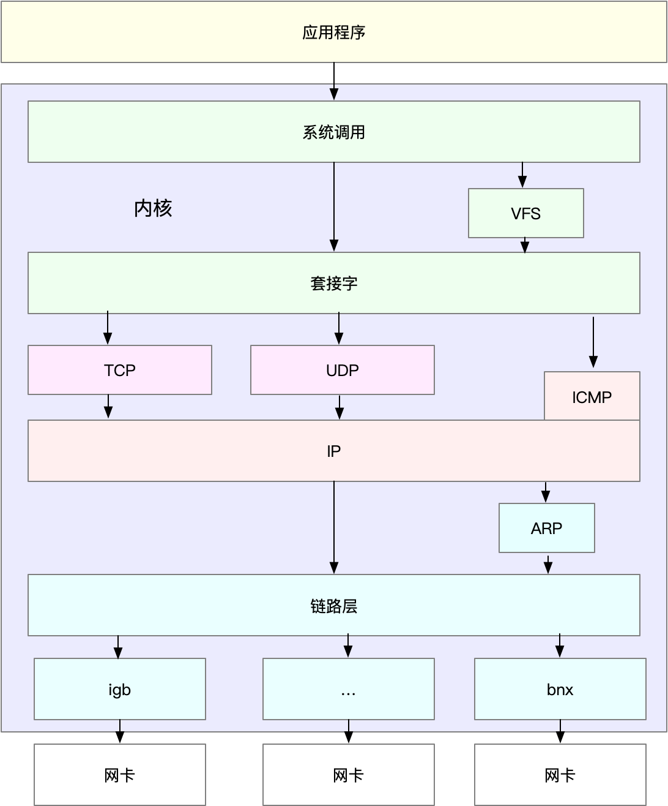
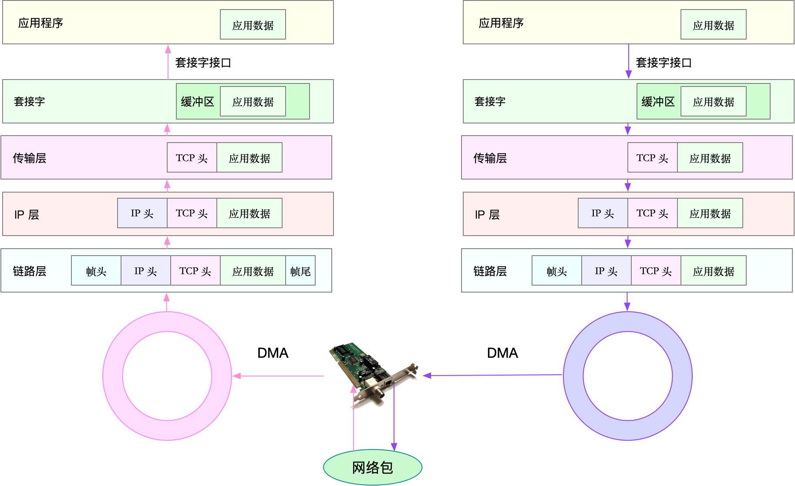

网络模型
开放式系统互联通信参考模型（Open System Interconnection Reference Model），简称为 OSI 网络模型。
OSI 模型把网络互联的框架分为应用层、表示层、会话层、传输层、网络层、数据链路层以及物理层等七层，每个层负责不同的功能。其中，
- 应用层，负责为应用程序提供统一的接口。
- 表示层，负责把数据转换成兼容接收系统的格式。
- 会话层，负责维护计算机之间的通信连接。
- 传输层，负责为数据加上传输表头，形成数据包。
- 网络层，负责数据的路由和转发。
- 数据链路层，负责 MAC 寻址、错误侦测和改错。
- 物理层，负责在物理网络中传输数据帧。
在 Linux 中，我们实际上使用的是另一个更实用的四层模型，即 TCP/IP 网络模型。
TCP/IP 模型，把网络互联的框架分为应用层、传输层、网络层、网络接口层等四层，其中，
- 应用层，负责向用户提供一组应用程序，比如 HTTP、FTP、DNS 等。
- 传输层，负责端到端的通信，比如 TCP、UDP 等。
- 网络层，负责网络包的封装、寻址和路由，比如 IP、ICMP 等。
- 网络接口层，负责网络包在物理网络中的传输，比如 MAC 寻址、错误侦测以及通过网卡传输网络帧等。

Linux 网络栈
有了 TCP/IP 模型后，在进行网络传输时，数据包就会按照协议栈，对上一层发来的数据进行逐层处理；然后封装上该层的协议头，再发送给下一层。

- 传输层在应用程序数据前面增加了 TCP 头；
- 网络层在 TCP 数据包前增加了 IP 头；
- 而网络接口层，又在 IP 数据包前后分别增加了帧头和帧尾。
这些新增的头部和尾部，增加了网络包的大小，但我们都知道，物理链路中并不能传输任意大小的数据包。网络接口配置的最大传输单元（MTU），就规定了最大的 IP 包大小。在我们最常用的以太网中，MTU 默认值是 1500（这也是 Linux 的默认值）。
一旦网络包超过 MTU 的大小，就会在网络层分片，以保证分片后的 IP 包不大于 MTU 值。显然，MTU 越大，需要的分包也就越少，自然，网络吞吐能力就越好。
理解了 TCP/IP 网络模型和网络包的封装原理后，你很容易能想到，Linux 内核中的网络栈，其实也类似于 TCP/IP 的四层结构。如下图所示，就是 Linux 通用 IP 网络栈的示意图：

- 最上层的应用程序，需要通过系统调用，来跟套接字接口进行交互；
- 套接字的下面，就是我们前面提到的传输层、网络层和网络接口层；
- 最底层，则是网卡驱动程序以及物理网卡设备。
Linux 网络收发流程
网络包的接收流程
内核协议栈从缓冲区中取出网络帧，并通过网络协议栈，从下到上逐层处理这个网络帧。比如，
- 在链路层检查报文的合法性，找出上层协议的类型（比如 IPv4 还是 IPv6），再去掉帧头、帧尾，然后交给网络层。
- 网络层取出 IP 头，判断网络包下一步的走向，比如是交给上层处理还是转发。当网络层确认这个包是要发送到本机后，就会取出上层协议的类型（比如 TCP 还是 UDP），去掉 IP 头，再交给传输层处理。
- 传输层取出 TCP 头或者 UDP 头后，根据 < 源 IP、源端口、目的 IP、目的端口 > 四元组作为标识，找出对应的 Socket，并把数据拷贝到 Socket 的接收缓存中。 最后，应用程序就可以使用 Socket 接口，读取到新接收到的数据了。

网络包的发送流程
首先，应用程序调用 Socket API（比如 sendmsg）发送网络包。由于这是一个系统调用，所以会陷入到内核态的套接字层中。
套接字层会把数据包放到 Socket 发送缓冲区中。
接下来，网络协议栈从 Socket 发送缓冲区中，取出数据包；再按照 TCP/IP 栈，从上到下逐层处理。比如，传输层和网络层，分别为其增加 TCP 头和 IP 头，执行路由查找确认下一跳的 IP，并按照 MTU 大小进行分片。
分片后的网络包，再送到网络接口层，进行物理地址寻址，以找到下一跳的 MAC 地址。然后添加帧头和帧尾，放到发包队列中。
这一切完成后，会有软中断通知驱动程序：发包队列中有新的网络帧需要发送。
最后，驱动程序通过 DMA ，从发包队列中读出网络帧，并通过物理网卡把它发送出去。
小结
TCP/IP 模型，把网络互联的框架，分为应用层、传输层、网络层、网络接口层等四层，这也是 Linux 网络栈最核心的构成部分。
应用程序通过套接字接口发送数据包，先要在网络协议栈中从上到下进行逐层处理，最终再送到网卡发送出去。而接收时，同样先经过网络栈从下到上的逐层处理，最终才会送到应用程序。